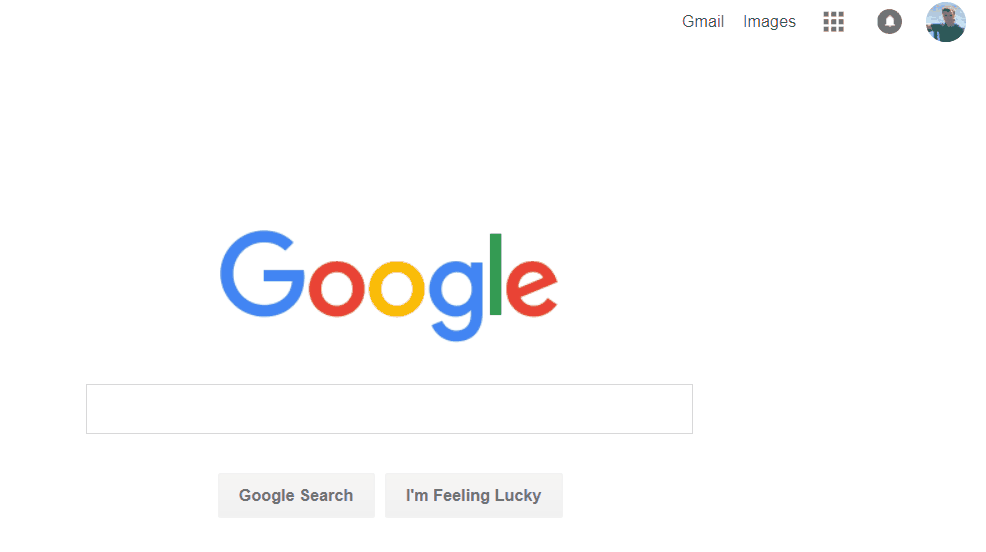

USAGE DEMO

COMPUTER-VISION SNIPPING TOOL
The product is licensed under MIT license.
Note: REVERSCREEN executable is not signed with a certificate, so expect Windows to warn you about this app is untrusted.
REVERSCREEN for Windows (setup, 14Mb)The following are experimental builds for 64-bit MacOS and Ubuntu:
Experimental build for macOS Sierra (2Mb) Experimental build for Ubuntu (1Mb)You can also get the source code, and build the app for your platform.